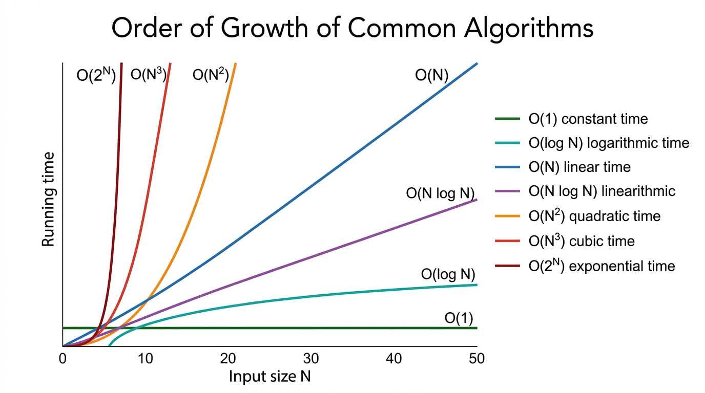

Analysis of Algorithms — COMP0005 Algorithms¶
Lecture-style notes on how we measure, predict, and compare algorithm performance — from timing experiments to mathematical models, tilde and asymptotic notation, and best / worst / average analysis.
1. COMPLETE TOPIC SUMMARIES¶
Observations (empirical analysis)¶
Before we prove anything, we often measure running time \(T(N)\) for various input sizes \(N\) and plot the results.
- Example — Bubble Sort timing: If you time Bubble Sort on random arrays of sizes \(N = 100, 200, 400, \ldots\), you typically see \(T(N)\) grow much faster than linearly — often consistent with a quadratic trend when \(N\) doubles, \(T(N)\) roughly quadruples (up to constant factors and noise). Such curves motivate the need for cleaner mathematical descriptions than raw stopwatch numbers.
Why raw timings are messy — two kinds of factors:
| Kind | What it captures | Examples |
|---|---|---|
| System-independent | Intrinsic to the problem + algorithm + input | Which algorithm you use; input size \(N\); input structure (sorted vs random; duplicates; etc.) |
| System-dependent | Everything outside the abstract algorithm | Hardware: CPU speed, cores, memory hierarchy, cache behaviour; Software: programming language, compiler / JIT, libraries; System: OS scheduling, background apps, thermal throttling |
Takeaway: Empirical plots are great for sanity checks and calibration, but comparing algorithms fairly across machines needs analysis that isolates growth rate in \(N\) from machine constants.
Mathematical models of running time¶
A standard model:
- Cost (seconds, or “machine steps”) depends on the machine and compiler — often treated as an unknown constant multiplier.
- Frequency (how many times the operation executes) depends on the algorithm and the input — this is what we usually count carefully.
So: separate “how expensive per step” from “how many steps.” Asymptotic notation later throws away the per-step constants and keeps the scaling in \(N\).
Frequency analysis — worked patterns¶
Single loop — count zeros in an array¶
Assume \(a[0..N-1]\) and pseudocode of the form:
A typical operation-by-operation count (exact constants depend on how you define “one operation,” but the pattern is standard):
| Operation kind | Representative count (order) | Notes |
|---|---|---|
| Variable declaration | \(2\) | e.g. count, loop index setup |
| Assignment | \(2\) | initialise count, possibly index init |
Less-than compare (i < N) |
\(N+1\) | \(N\) successful checks + \(1\) failure that exits |
Equal-to compare (a[i] == 0) |
\(N\) | once per iteration |
Array access (a[i]) |
\(N\) | once per iteration |
Increment (i++ or implicit) |
\(N\) to \(2N\) | depending whether you count both i update and count update separately |
Big picture: The loop body runs \(\Theta(N)\) times; dominant work is linear in \(N\).
Double loop — count pairs (i,j) summing to zero¶
- Inner
j-loop length for a fixedi: \((N-1-i)\) iterations. - Total inner iterations (sum over
i):
So the pair body runs \(\Theta(N^2)\) times.
Array accesses: Each inner iteration typically touches a[i] and a[j] → about \(2 \times \frac{N(N-1)}{2} = N(N-1)\) accesses (same order as \(N^2\)).
Comparison counts (outer i < N, inner j < N, etc.) accumulate to cubic polynomials in \(N\) in a fully itemised count; a common textbook-style total for the nested < checks alone is on the order of \(\tfrac{1}{2}(N+1)(N+2)\) — still \(\Theta(N^2)\) when we focus on growth.
Triple nested loop — typical cubic pattern¶
Many brute-force routines with \(i<j<k\) or three independent indices \(0 \le i,j,k < N\) end up with innermost work \(\Theta(N^3)\). A common sorted-triple style scan has about \(\sim \tfrac{1}{6}N^3\) innermost executions (binomial coefficient \(\binom{N}{3}\)); a full \(N\times N\times N\) cube has \(N^3\). Either way, array accesses are \(\Theta(N^3)\) — the course shorthand “~\(\tfrac{1}{2}N^3\)” is a representative order-of-magnitude for some specific triple-loop variants; always read the loop bounds on the sheet you are given.
Simplifications (what we keep vs drop)¶
- Focus on the most costly / most frequent operations — often comparisons, array accesses, or arithmetic inside the innermost loop — instead of counting every bookkeeping step.
- Ignore lower-order terms when \(N\) is large, using tilde (
~) notation.
Tilde notation (informal, growth-matching):
Example: If an exact count is \(\tfrac{1}{2}N^2 + 3N + 7\), then \(f(N) \sim \tfrac{1}{2}N^2\) — the \(N^2\) term dominates.
We also express running time as a function of input size \(N\) (and sometimes extra parameters like \(k\) in \(k\)-SUM, or \(V,E\) for graphs).
Order of growth — common “complexity classes”¶
When \(N\) is large, the leading growth rate tells you which algorithm will win:

{kind=link}
| Growth | Name / intuition | Typical examples (illustrative) |
|---|---|---|
| \(1\) | Constant | Hash table lookup average (idealised), array index |
| \(\log N\) | Logarithmic | Binary search on sorted array; balanced BST operations |
| \(N\) | Linear | Scan array once; two-pointer techniques |
| \(N \log N\) | Linearithmic | Merge sort, heapsort (worst-case \(\Theta(N\log N)\) for comparison sorts in general) |
| \(N^2\) | Quadratic | Naive all pairs, Bubble/Insertion sort worst cases |
| \(N^3\) | Cubic | Naive triple loops, some DP formulations |
| \(2^N\) | Exponential | Brute-force subsets, naive travelling salesman style search |
Each rate is a different performance class; constants matter for small \(N\), but asymptotics drive scalability.
Binary search — a logarithmic comparison count¶
Problem: Given a sorted array a, determine whether \(x\) appears (return an index or “not found”).
Pseudocode (as in course notes):
low = 0
high = len(a)
while (low <= high):
mid = low + (high - low) / 2
if x < a[mid]: high = mid - 1
elif x > a[mid]: low = mid + 1
else: return mid
return -1
Analysis sketch: Each iteration halves the search interval (up to \(O(1)\) edge cases). Starting length \(\Theta(N)\), the number of iterations satisfies \(\Theta(\log N)\) — hence comparisons with a[mid] are \(\Theta(\log N)\).
Tilde / log base: Writing \(T(N) \sim \ln N\) differs from \(\log_2 N\) only by a constant factor (change-of-base). In Big-O / Θ class, \(\Theta(\log N)\) ignores the base.
Types of analysis — best, worst, average¶
- Best case — a lower bound on cost for some “easy” input family (often not representative).
- Worst case — an upper bound guaranteed for all inputs of size \(N\); what you usually prove for correctness of performance claims in safety-critical or adversarial settings.
- Average case — expected cost under a probabilistic model of inputs (e.g. each permutation equally likely; random pivot; random hash function). Requires an explicit randomness model — different models → different averages.
Algorithm design stances¶
- Approach 1 — design for worst case: Guarantees robust performance (e.g. merge sort \(\Theta(N\log N)\) worst case).
- Approach 2 — design for average case: Use randomisation (QuickSort random pivot, randomised selection) so expected time is good while pathological inputs are unlikely — sometimes worst case remains bad, but probability of hitting it is tiny under the model.
Asymptotic notation — Big-O, Big-Omega, Big-Theta¶
Let \(f,g : \mathbb{N} \to \mathbb{R}_{\ge 0}\) (typical running-time functions).
- Big-O \(f(N) = O(g(N))\) — upper bound: \(f\) grows no faster than \(g\) (up to constants). Example: \(5N\log N + 2N = O(N^2)\) (very loose), also \(= O(N\log N)\) (tighter).
- Big-Omega \(f(N) = \Omega(g(N))\) — lower bound: \(f\) grows at least as fast as \(g\). Example: \(N^3 + N\log N = \Omega(N^2)\).
- Big-Theta \(f(N) = \Theta(g(N))\) — tight bound: \(f\) is sandwiched between constant multiples of \(g\) for large \(N\) — both \(O(g)\) and \(\Omega(g)\). Example: \(\tfrac{1}{2}N^2 + 10N = \Theta(N^2)\).
Sets vs abuse of notation: Strictly, \(O(g)\) is a set of functions; writing \(f(N) = O(g(N))\) is conventional shorthand.
Course mnemonics:
- \(O\) — “≤” (up to constants) in growth rate.
- \(\Omega\) — “≥” (up to constants).
- \(\Theta\) — “=” (up to constants) — matching upper and lower.
What lives in each set? (illustrative members for \(g(N)=N^2\))
- \(O(N^2)\) — anything that grows no faster than \(N^2\): e.g. \(2N^2\), \(5N\log N\), \(10N\), \(7\) (all are \(O(N^2)\); some are much smaller — \(O\) allows loose upper bounds).
- \(\Omega(N^2)\) — anything that grows at least as fast as \(N^2\): e.g. \(2N^2\), \(N^5\), \(N^3+N\log N\).
- \(\Theta(N^2)\) — same growth order as \(N^2\): e.g. \(\tfrac{1}{2}N^2\), \(2N^2\), \(N^2+5N\log N\) (leading term \(N^2\)).
How to know if we can do better (upper vs lower vs optimal)¶
- Upper bound — exhibit an algorithm and prove \(T(N) = O(\ldots)\) — a guarantee that some correct method uses at most that much time (up to constants).
- Lower bound — prove any correct algorithm must use \(\Omega(\ldots)\) resources (e.g. comparison lower bound \(\Omega(N\log N)\) for comparison-based sorting in the worst case).
- Classification — if you prove \(\Theta(\ldots)\) for a problem and an algorithm matches it, you’ve found optimal order (up to the model — e.g. comparison sorts).
When upper and lower match asymptotically, you’ve pinned the intrinsic difficulty of the problem (in that model).
2. EXAM-STYLE QUESTIONS (with model answers)¶
Q1 — Empirical vs analytical¶
Question: Explain why measuring Bubble Sort’s wall-clock time \(T(N)\) on one laptop is not enough to fairly compare two algorithms. Distinguish system-independent and system-dependent factors.
Model answer: Wall-clock time mixes intrinsic algorithmic cost with machine effects. System-independent factors (algorithm, \(N\), input distribution) tell you how work scales. System-dependent factors (CPU, cache, language, compiler, OS noise) shift timings by constants or add jitter. For fair comparison, use the same hardware for both or (better) analyse operation counts / asymptotic growth so conclusions transfer across machines.
Q2 — Frequency count¶
Question: For “count zeros” in \(a[0..N-1]\) with a single for i in range(N) loop, why is the i < N test executed \(N+1\) times?
Model answer: The loop checks the condition before each iteration. For \(i = 0,1,\ldots,N-1\), the test succeeds \(N\) times. When \(i = N\), the test fails once and the loop exits. Total \(N+1\) comparisons. This +1 is a low-order detail dropped in \(O(N)\) but important in exact instruction counting.
Q3 — Double loop¶
Question: Show that for
the inner loop runs \(\dfrac{N(N-1)}{2}\) times in total.
Model answer: For fixed i, j runs \(i+1\) through \(N-1\), i.e. \((N-1-i)\) values. Sum:
So inner-body work is \(\Theta(N^2)\).
Q4 — Asymptotic notation¶
Question: True or false? \(2N^2 + 100N = O(N^3)\). True or false? \(2N^2 + 100N = \Theta(N^3)\). Justify.
Model answer: True for \(O(N^3)\) — for large \(N\), \(2N^2+100N \le cN^3\) (e.g. \(c=3\) works eventually). False for \(\Theta(N^3)\) — \(\Theta\) needs \(\Omega(N^3)\) too, but \(f(N)/N^3 \to 0\), so \(f\) is not \(\Omega(N^3)\). Tight classification is \(\Theta(N^2)\).
Q5 — Cases of analysis¶
Question: For unsorted array search (check each element for \(x\)), give best-case, worst-case, and average-case time under the model: \(x\) is equally likely to be at any position or absent (uniform).
Model answer: Best: \(O(1)\) if \(x\) is the first element (or you adopt a model where you find it immediately). Worst: \(O(N)\) if \(x\) is last or missing — must scan all. Average: still \(\Theta(N)\) — expected position \(\Theta(N)\) when present; if absent, \(N\) checks. (Precise expectation depends on whether \(x\) is guaranteed present; state assumptions clearly in an exam.)
3. MUST-KNOW KEY POINTS¶
- Separate frequency (algorithm + input) from per-operation cost (machine/compiler).
- Nested loops often yield sums; \(\sum_{i=0}^{N-1} i = N(N-1)/2\) is the triangular number identity used constantly.
- Tilde \(f \sim g\) = ratio \(\to 1\); used to drop lower-order terms precisely.
- Growth classes \(1, \log N, N, N\log N, N^2, N^3, 2^N\) — know which typical algorithms land where.
- Binary search is \(\Theta(\log N)\) comparisons on sorted arrays.
- Best / worst / average — worst gives guarantees; average needs a probability model.
- \(O\) = upper, \(\Omega\) = lower, \(\Theta\) = tight (both).
- Optimality argument pattern: algorithm upper bound + problem lower bound → \(\Theta\) if they match.
4. HIGH-PRIORITY TOPICS¶
🔴 Must know¶
- Cost × frequency summation model; dominant term / tilde reasoning.
- Triangular sum \(\sum i\) and \(\Theta(N^2)\) double-loop pattern.
- Definitions and correct use of \(O\), \(\Omega\), \(\Theta\) (including counterexamples like \(O\) without \(\Theta\)).
- Binary search logarithmic analysis (halving invariant).
- Best / worst / average meanings; worst-case guarantees vs randomised expected bounds.
🟡 Important¶
- Empirical pitfalls; system-dependent vs independent factors.
- Triple-loop \(\Theta(N^3)\) recognition; translating exact polynomial counts to \(\Theta(\cdot)\).
- Log bases irrelevant in \(\Theta(\log N)\) (constant-factor change).
- Comparison lower bound \(\Omega(N\log N)\) for comparison sorting (story-level — often revisited when sorting is taught formally).
🟢 Useful but lower priority¶
- Exact instruction counts for every line of pseudocode (course-dependent).
- Average-case precise expectations with subtle probability models.
- Peeking ahead: amortised analysis, master theorem (if your term places them later).
5. TOPIC INTERCONNECTIONS & BIGGER PICTURE¶
flowchart LR
subgraph measure [Measure]
E[Empirical timing]
M[Cost times frequency model]
end
subgraph simplify [Simplify]
D[Dominant operations]
T[Tilde and asymptotics]
end
subgraph classify [Classify]
G[Growth classes]
A[O Omega Theta]
end
subgraph design [Design stance]
W[Worst-case guarantees]
R[Randomised average-case]
end
E --> M
M --> D
D --> T
T --> G
G --> A
A --> W
A --> R
- Empirical measurements motivate models; models predict scaling beyond what you can benchmark.
- Tilde is the bridge from exact polynomials to clean leading-term behaviour.
- Asymptotic notation is the language used everywhere later: sorting, graphs, DP, data structures.
- Upper + lower bounds connect algorithms (“I can”) with complexity (“nobody can, in this model”).
- Worst-case vs randomised thinking previews hash tables, QuickSort, Monte Carlo algorithms, etc.
6. EXAM STRATEGY TIPS¶
- State the loop invariant / summation before jumping to \(O(\cdot)\) — examiners reward $ \sum \(** setup (e.g. **\)\sum_{i=0}^{N-1}(N-1-i)$).
- Never confuse \(O\) with \(\Theta\) — if asked for “the complexity,” check whether they want tight \(\Theta\) or any valid \(O\).
- Always declare the input model for average case (uniform random? adversarial?).
- Match the course’s pseudocode when counting \(<\) tests — off-by-one constants are easy to miscount; show \(N+1\) style reasoning briefly, then say “still \(\Theta(N)\)” if appropriate.
- Binary search / log N: mention halving and \(\log\) — one short paragraph often suffices.
- If stuck, bound loosely first (\(O\)), then tighten (\(\Theta\)) if the question asks for exact growth class.
These notes align with standard COMP0005 introductions to analysis of algorithms; always cross-check definitions and notation with your official lecture slides and problem sheets.